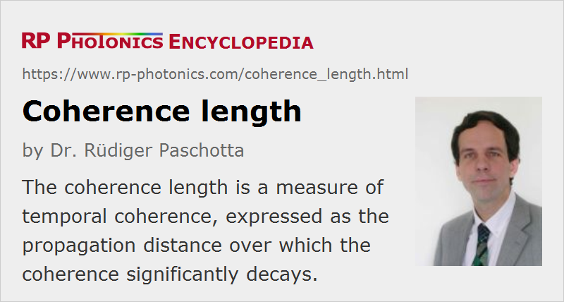

Coherence Length
Definition: a measure of temporal coherence, expressed as the propagation distance over which the coherence significantly decays
German: Kohärenzlänge
Categories: general optics, nonlinear optics
Formula symbol: Lcoh
Units: m
How to cite the article; suggest additional literature
Author: Dr. Rüdiger Paschotta
The coherence length can be used for quantifying the degree of temporal (not spatial!) coherence as the propagation length (and thus propagation time) over which coherence degrades significantly. It is defined as the coherence time times the vacuum velocity of light.
For light with a Lorentzian optical spectrum, the coherence length can be calculated as
where Δν is the (full width at half-maximum) linewidth (optical bandwidth). This coherence length is the propagation length after which the magnitude of the coherence function has dropped to the value of 1 / e.
In the literature, one often finds the above equation without the factor π in the denominator – often just for estimating the order of magnitude of the coherence length, without referring to a precise definition of optical bandwidth (e.g., as full width at half-maximum) and coherence length.
Note that such relations are not valid in cases where the coherence function has a more complicated shape, as is the case for, e.g., a frequency comb.
The reason for often using the term coherence length instead of coherence time is that the optical time delays involved in some experiment are often determined by optical path lengths. For example, the interferometer in Figure 1 shows pronounced interference fringes only if the coherence length of the laser light is at least as long as the path-length difference of the two arms. Also, in a setup for making holographic recordings, coherence between two beams with a somewhat different optical path length is required, so that the coherence length of the light source should be longer than the maximum occurring path-length difference. In addition to holography, a number of other applications may require a certain coherence length; see the article on coherence.
Some lasers, particularly single-frequency solid-state lasers, can have very long coherence lengths, e.g. 9.5 km for a Lorentzian spectrum with a linewidth of 10 kHz. For monolithic semiconductor lasers, even when operating in a single-frequency mode, the coherence length is typically shorter by several orders of magnitude. The coherence length is limited by phase noise which can result from, e.g., spontaneous emission in the gain medium. The quantum noise influence is weak (allowing for a long coherence length) when the circulating power in the laser is high, the resonator losses per round trip are low, and the round-trip time is long.
Coherence Length in Nonlinear Optics
An unfortunate use of the term coherence length is common in nonlinear optics: for example, in second-harmonic generation, the coherence length is often understood as the length over which fundamental and harmonic wave get out of phase (more precisely, the phase difference accumulated over this length is π). This is inconsistent with the general notion of coherence, because a predictable phase relationship (strong phase correlation) is definitely maintained over more than this length, although there is a systematic evolution of the relative phase.
Questions and Comments from Users
2020-04-03
If the free running, absolute linewidth of a solid state laser is say 200 kHz over short timescales (such as 100 μs) but then the frequency of the laser drifts associated with changes in temperature, and that results in a larger effective linewidth of several megahertz over longer timescales, how does this effect the coherence length?
Answer from the author:
If such drifts are not very fast, they will not affect the coherence length. That will remain limited by the short-term phase fluctuations.
Here you can submit questions and comments. As far as they get accepted by the author, they will appear above this paragraph together with the author’s answer. The author will decide on acceptance based on certain criteria. Essentially, the issue must be of sufficiently broad interest.
Please do not enter personal data here; we would otherwise delete it soon. (See also our privacy declaration.) If you wish to receive personal feedback or consultancy from the author, please contact him e.g. via e-mail.
By submitting the information, you give your consent to the potential publication of your inputs on our website according to our rules. (If you later retract your consent, we will delete those inputs.) As your inputs are first reviewed by the author, they may be published with some delay.
See also: coherence, coherence time, linewidth, laser speckle, The Photonics Spotlight 2006-09-22
and other articles in the categories general optics, nonlinear optics
|  |
If you like this page, please share the link with your friends and colleagues, e.g. via social media: 


These sharing buttons are implemented in a privacy-friendly way! |
2020-03-16
How can one calculate or quantify coherence length from laser phase noise values?
Answer from the author:
Laser phase noise may be quantified in different forms – for example, with an autocorrelation function or a power spectral density. One requires some quite involved equations for calculating the coherence length from that; this is a technically quite complicated field. Sorry, I don't have a good reference available at the moment – maybe someone else can help?